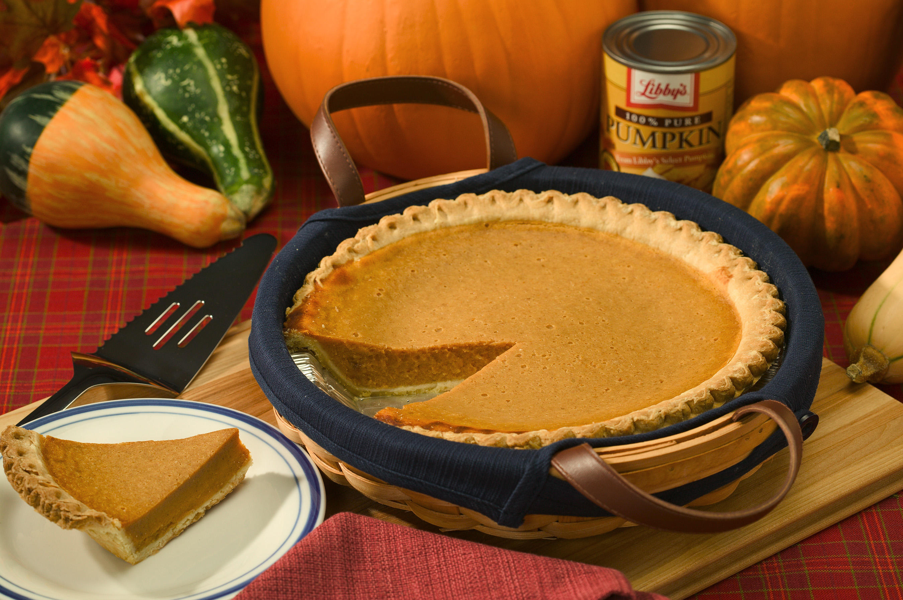

Pumpkin Pie

Description
Pumpkin pie is a traditional American and Canadian holiday dessert. It consists of a pumpkin-based custard baked in a single pie shell. The pie is traditionally served with whipped cream.
Ingredients
- 2 cups (480 ml) milk, scalded
- 2 cups (450 g) cooked and puréed pumpkin (or plain canned pumpkin)
- 1 cup (240 ml) maple syrup
- ⅛ cup (30 g) sugar
- 1 tbsp flour
- ½ tsp salt
- 1 tsp ginger
- 1 tsp cinnamon
- ¼ tsp nutmeg (optional)
- 2 large eggs, beaten
- 1 unbaked 9-inch pie shell
Procedure
- Preheat oven to 350°F (180°C).
- Blend all ingredients except the pie shell together to make the filling.
- Pour the filling into the unbaked pie shell.
- Bake in the preheated oven for 45 minutes.
- Let cool and serve.